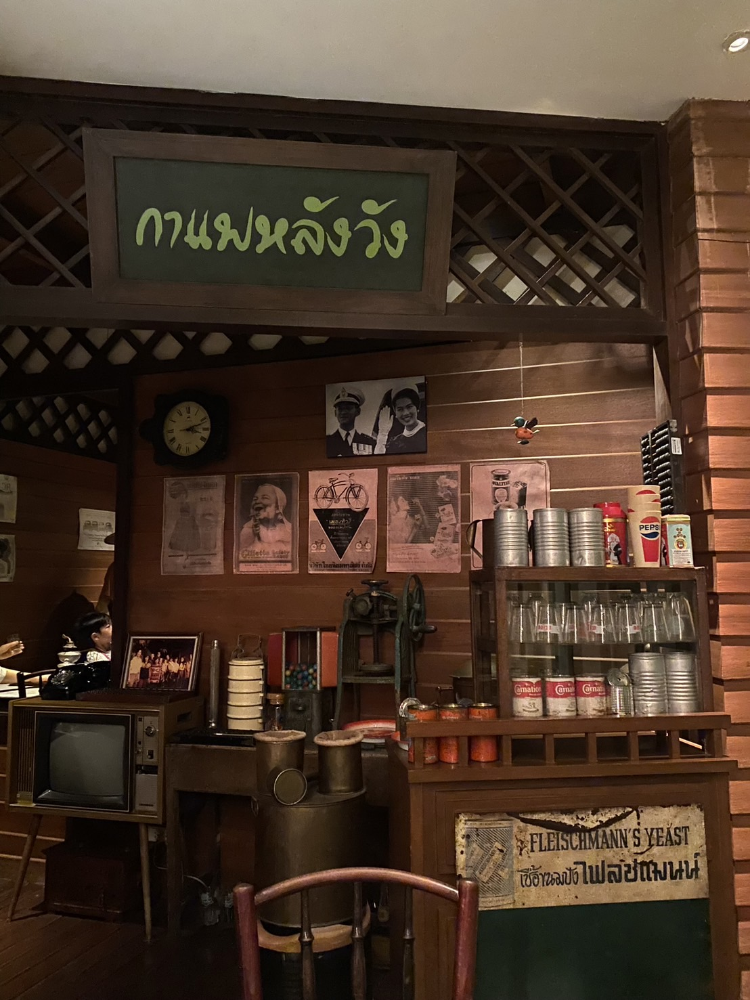

พิพิธภัณฑ์นิทรรศการรัตนโกสินทร์
เมื่อเดินเข้ามาด้านในนิทรรศรัตนโกสินทร์ จะแบ่งเป็น 2 เส้นทางให้เลือกพร้อมมีไกด์ให้ข้อมูล โดยทางแรกมี 7 ห้อง เป็นเส้นทางที่บอกเล่าประวัติและความเจริญรุ่งเรืองในด้านต่างๆของกรุงรัตนโกสินทร์ ส่วนเส้นทางที่ 2 มี 2 ห้อง เส้นทางนี้จะให้ความรู้เกี่ยวกับพระราชกรณียกิจของพระมหากษัตริย์แห่งราชวงศ์จักรีทั้ง 9 รัชกาล ใช้เวลาเส้นทางละประมาณ 2 ชั่วโมง เราเลือกเส้นทางแรกก่อนจากนั้นตามด้วยเส้นทางสอง